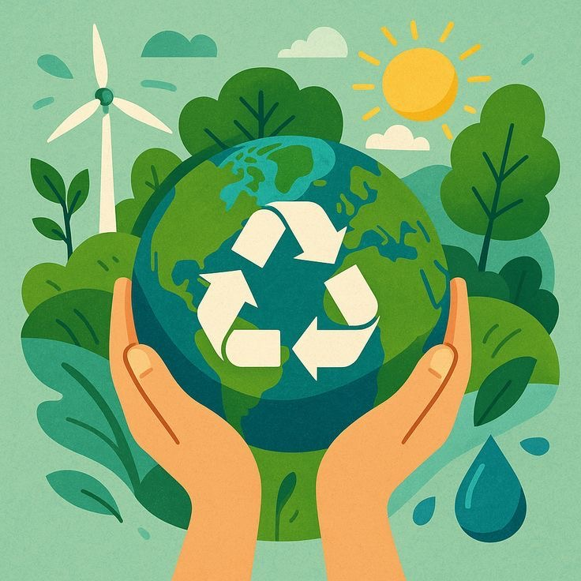

Ecotecnias energeticas: generan energia a partir de fuentes renovables como el sol, el viento y la biomasa, reduciendo el uso de combustibles fosiles.
Ecotecnias del agua: incluyen sistemas de captacion, purificacion y reutilizacion del agua para un uso mas eficiente y responsable.
Ecotecnias alimentarias: promueven la produccion organica de alimentos mediante huertos, invernaderos y tecnicas de agricultura sostenible.
Ecotecnias de construccion: usan materiales naturales y reciclados para edificar viviendas con menor impacto ambiental.
Ecotecnias de manejo de residuos: convierten desechos en recursos aprovechables como abono, biogas o materiales reutilizables.
Regresar